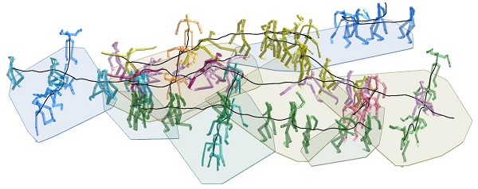

Manmyung Kim, Youngseok Hwang,
Kyunglyul Hyun, Jehee Lee,
ACM SIGGRAPH/Eurographics Symposium on Computer Animation (SCA) 2012,
Awarded with honorable mention
Kyunglyul Hyun,
Manmyung Kim,
Youngseok Hwang,
Jehee Lee,
IEEE Transactions on Visualization and Computer Graphics Nov. 2013 (vol. 19 no. 11)

Simulating multiple character interaction is challenging because character actions must be carefully coordinated to align their spatial locations and synchronized with each other. We present an algorithm to create a dense crowd of virtual characters interacting with each other. The interaction may involve physical contacts, such as hand shaking, hugging, and carrying a heavy object collaboratively. We address the problem by tiling deformable motion patches spatially and temporally. Each motion patch consists of a collection of motion fragments that encapsulate interactions among characters. The tiling of motion patches generates a seamless simulation of virtual characters interacting with each other in a non-trivial manner. Our tiling algorithm uses a combination of stochastic sampling (metropolis algorithm) and deterministic search to address the discrete and continuous aspects of the tiling problem. Our deformable motion patches alleviate the difficulty of tiling by adding flexibility in stitching patches.